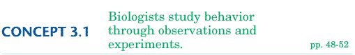

|
|
|
|
 Objectives
Key Terms Have you ever observed a pet cat or dog at play and wondered what the animal's behavior meant? For thousands of years, people have been curious about the activities of other animals that share their surroundings. Asking Questions About Animal Behavior For example, in observing the humpback whales you read about in this chapter's introduction, you might ask many questions about their distinctive behaviors. Consider the spectacular scene illustrated in Figure 3-1. As the humpback whale spirals to the surface, it releases a stream of bubbles. What is the function of this bubble-blowing behavior? Through many observations, biologists learned that this "bubble net" temporarily traps small fish and shrimp on which the whale feeds. This observation raises further questions. What causes the whale to blow bubbles? Is this behavior learned, or is the whale born knowing how to use bubble nets? These questions in turn can set a direction for further inquiry.
You read in Chapter 2 that scientists rely on two approaches to explore life: discovery science (observation and careful description) and hypothesis-based science (testing explanations, usually with experiments). As in other areas of biology, most investigations of animal behavior involve some combination of these two approaches. Often, the scientist observes an animal closely and describes an interesting behavior (discovery science). This leads to asking a question about the behavior and developing a testable hypothesis to explain it (hypothesis-based science). Observing Behavior in Natural Environments One example is Jane Goodall's field study on chimpanzees (introduced in Chapter 2). Dr. Goodall's tools were minimal: a notebook, binoculars, and patience. When she began studying the chimps, she was only able to glimpse the chimps from afar. After six months the chimps allowed her to approach close enough to make detailed observations. By this time she could recognize many of the individual chimps, and she gave them names to distinguish them in her notes. By tracking individuals she noticed patterns in the animals' interactions with each other. Each animal had a social rank within the group. She hypothesized that higher-ranking chimps must have certain advantages over lower-ranking chimps. Her further observations of female chimps supported this hypothesis. The highest-ranking females had access to the best food and could thus provide their infants with the richest milk. Designing Experiments on Animal Behavior In the 1920s, an insect called a digger wasp sparked the curiosity of Dutch biologist Niko Tinbergen. Female digger wasps build their nests in a small burrow in sandy ground. The nest consists of four or five cells branching from a main tunnel. After laying an egg in each cell, the wasp flies off to hunt bees, which she paralyzes and carries back to the nest to feed her young. Tinbergen observed this behavior among several female wasps in a small area with many burrows. He wondered whether each wasp returned to only her own nest. By marking the wasps with different-colored drops of paint, he was able to track individuals and conclude that they did return to only their own nests. Next he asked, "How does each wasp keep track of her nests?" Tinbergen hypothesized that the wasps use landmarks to locate their burrows. To test his hypothesis, he placed a circle of pine cones around a nest opening (Figure 3-3). He observed that when a female wasp emerged from her nest, she sometimes flew about as if she were getting her bearings. When the wasp flew away, he moved the pine cones to one side of the nest. The next time the wasp returned, she flew to the center of the pine-cone circle instead of the actual nest. Tinbergen concluded that the wasp did use landmarks to find her nests, and that she could learn new ones.
Tinbergen's results raised a new question: Did the wasp respond to the pine cones themselves or to their circular arrangement? To answer this, Tinbergen arranged the pine cones in a triangle around the nest and made a circle of small stones off to one side of the nest opening. This time, the wasp flew to the stones, indicating that she was responding to the arrangement of the landmarks rather than the landmarks themselves. Immediate and Ultimate Causes of Behavior But behavioral biologists also ask "why" questions—why do organisms behave as they do? Answering "why" questions involves finding the ultimate cause of a behavior—an explanation based on the organism's evolutionary adaptations. How did the behavior first arise? What is the function of the behavior—in other words, how does it help the organism to survive and reproduce? To illustrate the difference between immediate and ultimate causes of behavior, consider this example. When you accidentally touch a hot plate, your arm quickly pulls away. The immediate cause of this behavior—the how—is the reaction of your nervous system, which sends signals to the muscles in your arm. A reasonable hypothesis for the ultimate cause—the why—is that natural selection has favored this response, which minimizes damage to the body in a dangerous situation. Concept Check 3.1
|